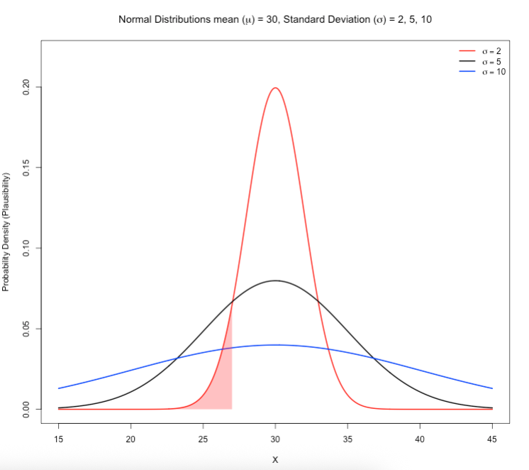
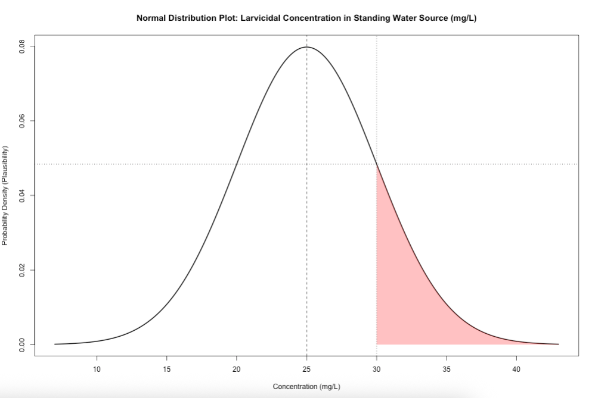
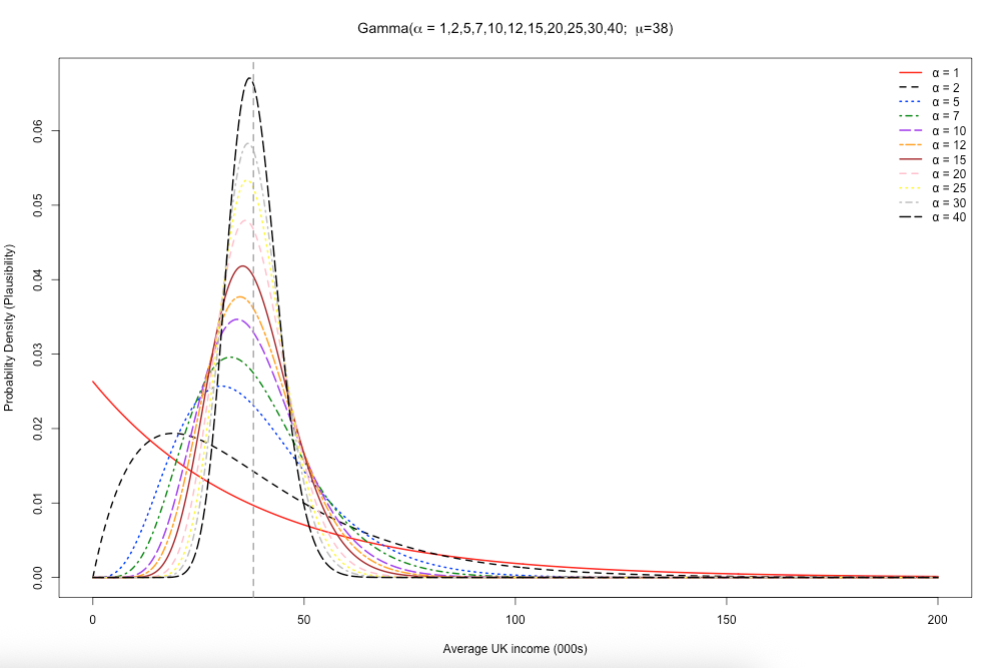
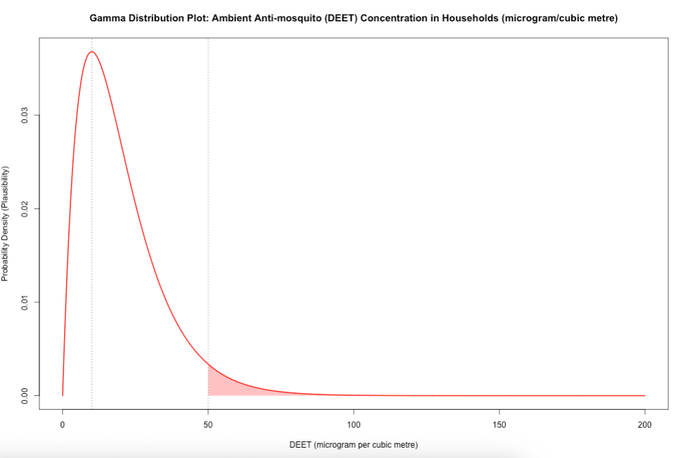
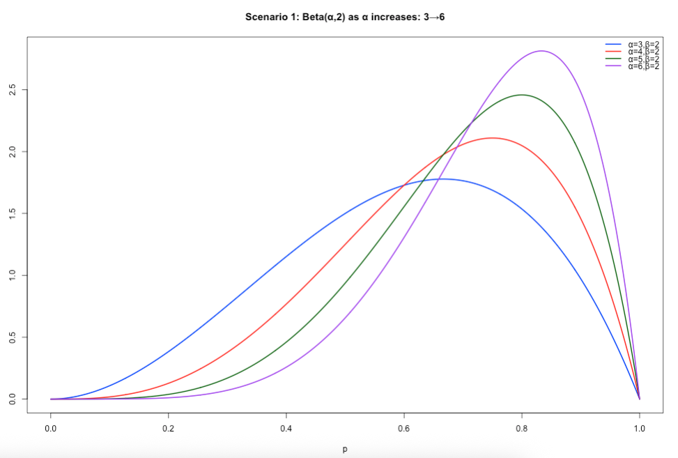
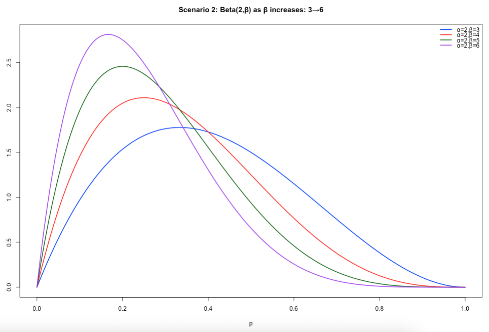
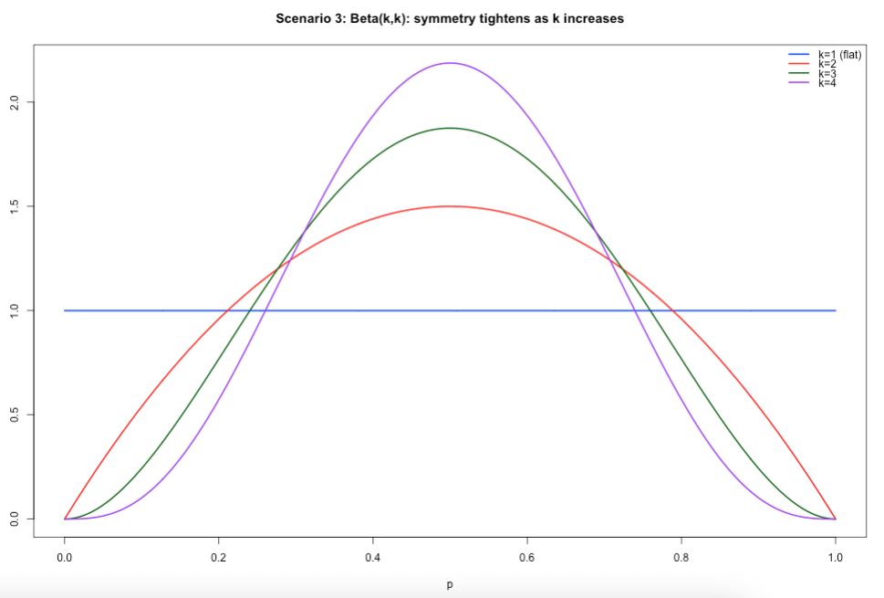
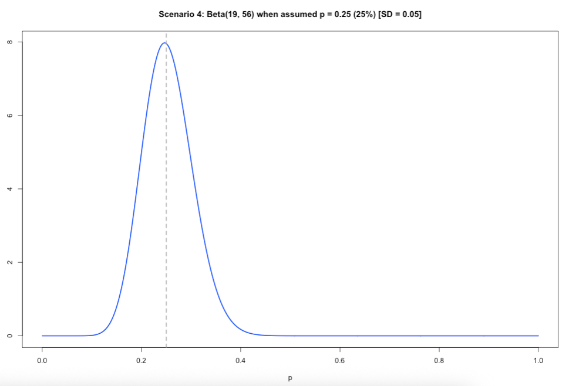
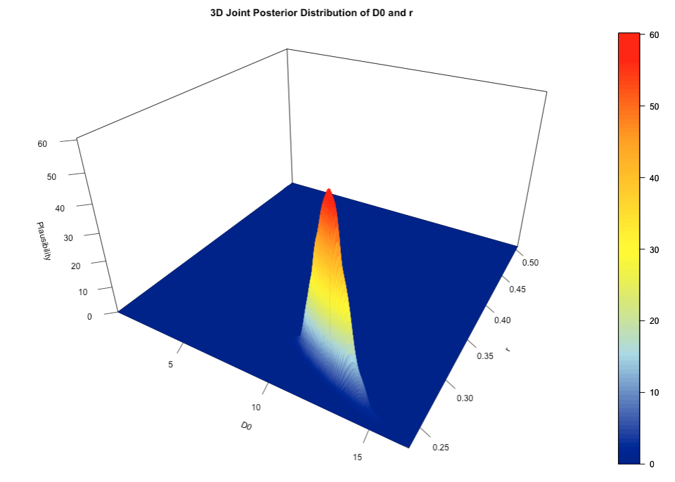
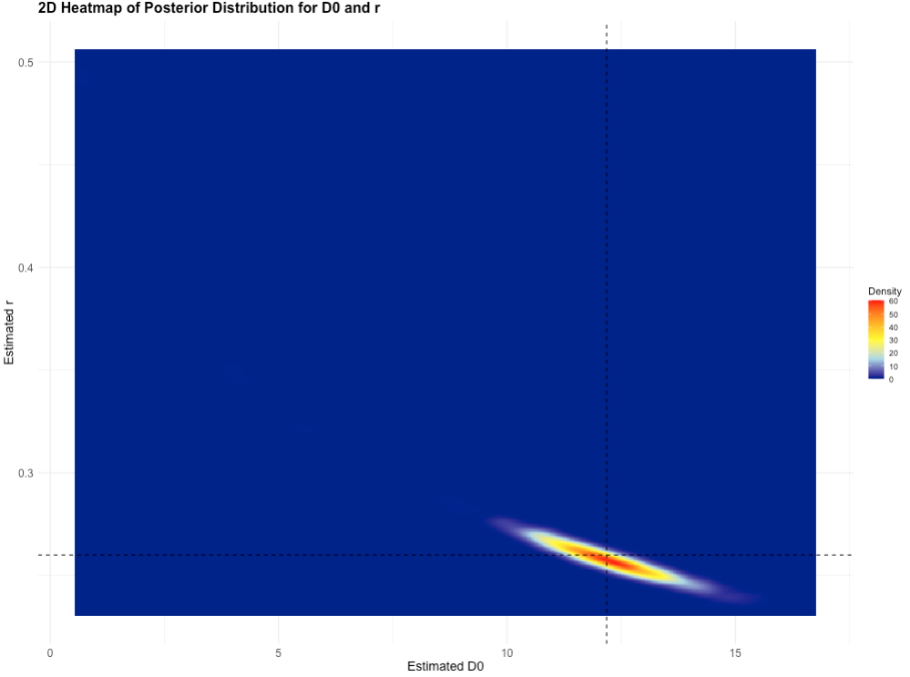

7 Appendix
7.1 How to generate a Probability Distribution
This section includes the r-syntax codes for generating the plots shown in Day 1’s lectures on Introduction to Probability Distributions
7.1.1 Figure Image on Slide 33
Here, we wanted to understand the behaviour of the Normal distribution with an assumed fixed value for the mean (\(\mu\)) and changing values for the standard deviation (\(\sigma\)) to illustrate how the spread are affected by changing the \(\sigma\).
See code:
# let us define our parameters (mu = 30, sds = 2, 5 or 10)
# make x range from 15 to 45 spread over tiny intervals
mean <- 30
sds <- c(2, 5, 10)
colors <- c("red", "black", "blue")
x <- seq(15, 45, length.out = 500)
# plot the first distribution (σ = 2)
y1 <- dnorm(x, mean = mean, sd = sds[1])
plot(x, y1, type = "l", col = colors[1], lwd = 2,
ylim = c(0, 0.22), xlab = "X", ylab = "Probability Density (Plausibility)",
main = expression(paste("Normal Distributions mean (", mu, ") = 30, Standard Deviation (", sigma, ") = 2, 5, 10")))
# add the other curves for when sds = 5 or 10
lines(x, dnorm(x, mean = mean, sd = sds[2]), col = colors[2], lwd = 2)
lines(x, dnorm(x, mean = mean, sd = sds[3]), col = colors[3], lwd = 2)
# next code adds the shaded area to calculate the cumulative probability (area under the curve)
# add shaded area under the red curve (σ = 2) between x = 15 and x = 27
x_shade <- seq(15, 27, length.out = 100)
y_shade <- dnorm(x_shade, mean = mean, sd = sds[1])
polygon(c(x_shade, rev(x_shade)),
c(rep(0, length(x_shade)), rev(y_shade)),
col = rgb(1, 0, 0, 0.3), border = NA)
# Add legend
legend("topright", legend = c(expression(sigma == 2), expression(sigma == 5), expression(sigma == 10)),
col = colors, lty = 1, lwd = 2, bty = "n")See output and refer to the description on slide 33:

7.1.2 Figure Image on Slide 34
Here, we illustrated an example of using a Normal distribution with environmental concentrations of BTI larvicide dunks in standing water bodies where we assumed \(\mu_{BTI}\) = 25.0mg/L and \(\sigma_{BTI}\) = 5.0mg/L. The range of values start from 7.0 mg/L to 43.0 mg/L, and 30mg/L is used as a cutoff in this example.
You can directly estimate the plausibility of a given value by using the dnorm() function. The likelihood of BTI concentrations in the environment being 30mg/L relative to all other BTI values in the distribution.
See code:
# compute the plausibility for 30 mg/L when mu = 25 and sd = 5
dnorm(30.0, mean = 25, sd = 5)
# result is 0.0483You can generate curved figure based on the above information. See code:
# let us define our parameters (mu = 25 and sd = 5)
mu <- 25
sd <- 5
# make x range from 7 to 45 spread over increments of 0.1
x <- seq(7, 43, by = 0.1)
y <- dnorm(x, mean = mu, sd = sd)
# generate plot
plot(x, y, type = "l", lwd = 2,
main = "Normal Distribution Plot: Larvicidal Concentration in Standing Water Source (mg/L)",
xlab = "Concentration (mg/L)",
ylab = "Probability Density (Plausibility)")
# add vertical line at the mean
abline(v = mu, lty = 2)
# add the shaded area for BTI >= 30
x_shade <- x[x >= 30]
y_shade <- y[x >= 30]
polygon(c(x_shade, rev(x_shade)),
c(y_shade, rep(0, length(y_shade))),
col = rgb(1, 0, 0, alpha = 0.3), border = NA)
# add dashed lines to plot
# add the dashed vertical line at the cutoff at 30
abline(v = 30, lty = 3)
# dashed horizontal line to trace what 30 is in terms of plausibility
abline(h=0.04839414, lty = 3)See output and refer to the description and interpretation on slide 35:

Note that you can directly estimate the probability of a given value by using the pnorm() function.
The cumulative probability of BTI concentrations in the environment being at most 30mg/L (area under the curve that is white) is 84.1%.
See code:
# compute the cumulative probability for 30 mg/L when its assumed mu is 25 and sd is 5
pnorm(30.0, mean = 25, sd = 5)
# result is 0.8413447The exceedance probability of BTI concentrations in the environment being at least 30mg/L (area under the curve that is red) is 15.9%.
See code:
7.1.3 Figure Image on Slide 35
Here, we wanted to understand the behaviour of the Gamma distribution for with an assumed fixed mean (\(\mu\)) and scale (\(\beta\)) value but with changing values for its shape parameter (i.e., \(\alpha\)) to illustrate how it effect it skewed shape.
See code:
# define following set of values
mean_val <- 38
shapes <- c(1, 2, 5, 7, 10, 12, 15, 20, 25, 30, 40)
scales <- mean_val / shapes
# x-axis for income from 0 to 200k
x <- seq(0, 200, length.out = 500)
# creCompute densities (one column per α)
dens_mat <- sapply(seq_along(shapes), function(i) {
dgamma(x, shape = shapes[i], scale = scales[i])
})
# Set up empty plot with y-limits
ymax <- max(dens_mat, na.rm = TRUE)
plot(
x, dens_mat[,1], type = "n",
ylim = c(0, ymax),
main = expression(paste("Gamma(", alpha, " = 1,2,5,7,10,12,15,20,25,30,40; ", mu, "=38)")),
xlab = "Average UK income (000s)", ylab = "Probability Density (Plausibility)"
)
# Colours & line‐types (one for each α)
cols <- c("red", "black", "blue", "green4", "purple", "orange", "brown", "pink", "yellow", "grey", "black")
ltys <- 1:length(shapes)
# Overlay each curve
for(i in seq_along(shapes)) {
lines(
x, dens_mat[,i],
col = cols[i], lty = ltys[i], lwd = 2
)
}
# Add vertical dashed line at the mean
abline(v = mean_val, lty = 2, col = "darkgray", lwd = 2)
# Legend
legend(
"topright",
legend = paste0("α = ", shapes),
col = cols,
lty = ltys,
lwd = 2,
bty = "n"
)See output and refer to the description on slide 35:

Note the following points:
- You can directly estimate the plausibility of a given value from a Gamma distribution by using the
dgamma()function. - You can directly estimate the cumulative or exceedance probability of a given value from a Gamma distribution by using the
pgamma()function.
7.1.4 Figure Image on Slide 36
Here, we illustrated an example of using a Gamma distribution with environmental chemical concentrations of mosquito repellent (DEET) in households where we assumed \(\mu_{DEET}\) = 20.0\(\mu g/m^3\), \(\alpha\) (shape) = 2 and \(\beta\) (scale) = 10. The range of values start from 0.0\(\mu g/m^3\) to 200.0\(\mu g/m^3\), and 50.0\(\mu g/m^3\) is used as a cutoff in this example.
You can directly estimate the plausibility of a given value by using the dgamma() function. The likelihood of DEET concentrations in the environment being 50.0\(\mu g/m^3\) relative to all other DEET values in the distribution.
See code:
You can generate curved figure based on the above information. See code:
# Set up for the DEET values
x <- seq(0, 200, length.out = 1000)
# mean
mu = 20
# shape parameter < scale → skewed right
shape <- 2
# scale parameter
scale <- mu/shape
# Gamma PDF
y <- dgamma(x, shape = shape, scale = scale)
# estimate its median (50th percentile)
med_estimate <- qgamma(0.5, shape = shape, scale = scale)
# Plot
plot(x, y, type = "l", lwd = 2, col = "red",
main = "Gamma Distribution Plot: Ambient Anti-mosquito (DEET) Concentration in Households (microgram/cubic metre)",
ylab = "Probability Density (Plausibility)", xlab = "DEET (microgram per cubic metre)")
# shade area for DEET >= 50
x_shade <- x[x >= 50]
y_shade <- y[x >= 50]
polygon(c(x_shade, rev(x_shade)),
c(y_shade, rep(0, length(y_shade))),
col = rgb(1, 0, 0, alpha = 0.3), border = NA)
# dashed line at the cutoff
abline(v = 50, lty = 3)
# dashed line at the cutoff
abline(v = (2-1)*scale, lty = 3) See output and refer to the description and interpretation on slide 36:

Note that you can directly estimate the probability of a given value by using the pgamma() function.
The cumulative probability of DEET concentrations being at most 50.0\(\mu g/m^3\) (area under the curve that is white) is 95.96%.
See code:
The exceedance probability of DEET concentrations being being at least 50.0\(\mu g/m^3\) (area under the curve that is red) is 4.04%.
See code:
7.1.5 Figure Image on Slide 37-40
Here, we wanted to understand the behaviour of the Beta distribution for proportions, and how to centre it accordingly to a given value (i.e., a proportion) using the two shape parameters - (\(\alpha\)) and (\(\beta\)). We show codes for four different scenarios.
Scenario 1: Specifying both 𝛼 and 𝛽. When 𝛼 is greater than 𝛽, the resulting distribution is that of a negatively skewed distribution. Use this scenario if you assume higher proportion values closer to 1 (i.e., 100%) to be more plausible – then let 𝛼 be greater than 𝛽.
See code:
# Scenario 1: alpha > beta, beta = 2
x <- seq(0, 1, length.out = 1000)
y1 <- dbeta(x, shape1 = 3, shape2 = 2)
y2 <- dbeta(x, shape1 = 4, shape2 = 2)
y3 <- dbeta(x, shape1 = 5, shape2 = 2)
y4 <- dbeta(x, shape1 = 6, shape2 = 2)
# set y–limits to accommodate the tallest curve
ylim <- c(0, max(y1, y2, y3, y4))
plot(x, y1, type = "l", lwd = 2, col = "blue", ylim = ylim,
xlab = "p", ylab = "Density",
main = "Scenario 1: Beta(α,2) as α increases: 3→6")
lines(x, y2, lwd = 2, col = "red")
lines(x, y3, lwd = 2, col = "darkgreen")
lines(x, y4, lwd = 2, col = "purple")
legend("topright",
legend = c("α=3,β=2","α=4,β=2","α=5,β=2","α=6,β=2"),
col = c("blue","red","darkgreen","purple"),
lwd = 2,
bty = "n")Output of slide 37:

Scenario 2: Specifying both 𝛼 and 𝛽. When 𝛽 is greater than 𝛼, the resulting distribution is that of a positively skewed distribution. If you assume lower proportion values closer to 0 (i.e., 0%) to be more plausible – then let 𝛽 be greater than 𝛼.
See code:
# Scenario 2: beta > alpha, alpha = 2
x <- seq(0, 1, length.out = 1000)
y1 <- dbeta(x, shape1 = 2, shape2 = 3)
y2 <- dbeta(x, shape1 = 2, shape2 = 4)
y3 <- dbeta(x, shape1 = 2, shape2 = 5)
y4 <- dbeta(x, shape1 = 2, shape2 = 6)
ylim <- c(0, max(y1, y2, y3, y4))
plot(x, y1, type = "l", lwd = 2, col = "blue", ylim = ylim,
xlab = "p", ylab = "Density",
main = "Scenario 2: Beta(2,β) as β increases: 3→6")
lines(x, y2, lwd = 2, col = "red")
lines(x, y3, lwd = 2, col = "darkgreen")
lines(x, y4, lwd = 2, col = "purple")
legend("topright",
legend = c("α=2,β=3","α=2,β=4","α=2,β=5","α=2,β=6"),
col = c("blue","red","darkgreen","purple"),
lwd = 2,
bty = "n")Output of slide 38:

Scenario 3: Specifying both 𝛼 and 𝛽. When 𝛼 is equal to 𝛽, and increasing both at the same time, the resulting distribution starts of as a uniform distribution and then converges to that which is akin to a normal distribution. Uniform – every value for the proportion is equally plausible, while as both parameters increase in the same way, we assume that the proportion of 50% became more and more plausible.
See code:
# Scenario 3: alpha = beta
x <- seq(0, 1, length.out = 1000)
y1 <- dbeta(x, shape1 = 1, shape2 = 1)
y2 <- dbeta(x, shape1 = 2, shape2 = 2)
y3 <- dbeta(x, shape1 = 3, shape2 = 3)
y4 <- dbeta(x, shape1 = 4, shape2 = 4)
ylim <- c(0, max(y1, y2, y3, y4))
plot(x, y1, type = "l", lwd = 2, col = "blue", ylim = ylim,
xlab = "p", ylab = "Density",
main = "Scenario 3: Beta(k,k): symmetry tightens as k increases")
lines(x, y2, lwd = 2, col = "red")
lines(x, y3, lwd = 2, col = "darkgreen")
lines(x, y4, lwd = 2, col = "purple")
legend("topright",
legend = c("k=1 (flat)","k=2","k=3","k=4"),
col = c("blue","red","darkgreen","purple"),
lwd = 2,
bty = "n")Output of slide 39:

Scenario 4: When you have a specific value for the proportion which you want the Beta distribution to be centred on – you will have to solve for both 𝛼 and 𝛽! Meaning that you will need to specify an assumed mean value (𝜇) for the proportion and a small value for the standard deviation (𝜎).
\(\beta\) = \(\mu\) - 1 + [(\(\mu\) x (1 - (1-\(\mu)^2\) )/\(\sigma^2\)]
\(\alpha\) = \(\beta\)\(\mu\)/(1 - \(\mu\))
See code:
# scenario 4
mu = 0.25
sigma = 0.05
beta = (mu - 1) + (mu *(1-mu)^2)/(sigma^2)
alpha = (beta * mu)/(1-mu)
alpha
beta
# 19
# 56
x <- seq(0, 1, length.out = 1000)
y <- dbeta(x, shape1 = 19, shape2 = 56)
plot(x, y, type = "l", lwd = 2, col = "blue",
xlab = "p", ylab = "Density",
main = "Scenario 4: Beta(19, 56) when assumed p = 0.25 (25%) [SD = 0.05]")
abline(v = mu, lty = 2, col = "darkgray", lwd = 2)Output of slide 40:

Note the following points:
- You can directly estimate the plausibility of a given value from a Beta distribution by using the
dbeta()function. - You can directly estimate the cumulative or exceedance probability of a given value from a Beta distribution by using the
pbeta()function.
7.2 How to generate Joint Posterior plot
This section includes the r-syntax codes for generating the plots shown in Day 2’s lectures on Introduction to Bayesian Inference
7.2.1 Joint Posterior Distribution for D0 and r in 3D
Let us revisit the Day 2’s practical and re-run the codes and Stan script:
# Load the packages with library()
library('rstan')
library('tidybayes')
library('posterior')
library('MASS')
library('plot3D')
library('ggplot2')
options(mc.cores = parallel::detectCores())
rstan_options(auto_write = TRUE)
# Simulated data
day <- 0:14
observed_cases <- c(12, 9, 19, 30, 27, 45, 67, 71, 103, 119, 161, 213, 288, 340, 431)
# Data list for Stan
stan_dataset <- list(
N = length(day),
t = as.vector(day),
y = as.integer(observed_cases)
)
# here, using two chains only and setting warming to 20 to obtain a near full posterior distribution
# here, 5000 iterations is being used, and only 40 samples are discarded
fit <- stan(
file = "Incidence_rates.stan",
data = stan_dataset,
iter = 5000,
warmup = 20,
chains = 2,
seed = 20231221,
verbose = FALSE
)
print(fit, pars = c("D0", "r"), probs = c(0.025, 0.5, 0.975))This is the code for visualising the two parameters’ (i.e., D0' and 'r) joint posterior distribution in a 3-dimension space.
# extract (near) full posterior from Stan which include warm up/burnin samples (i.e., non-discarded samples as well)
full_posterior <- spread_draws(fit, D0, r)
# Create a grid of values for the 3D plot
D0_seq <- seq(min(full_posterior$D0), max(full_posterior$D0), length.out = 500)
r_seq <- seq(min(full_posterior$r), max(full_posterior$r), length.out = 500)
grid <- expand.grid(D0 = D0_seq, R = r_seq)
# Estimate the density on the grid
density_vals <- kde2d(full_posterior$D0, full_posterior$r, n = 500)
# 3D surface plot using persp3D
persp3D(
x = density_vals$x, y = density_vals$y, z = density_vals$z,
theta = 30, phi = 30, # Adjust the view angles
expand = 0.6, # Scale the plot
colvar = density_vals$z, # Use density values for color mapping
col = colorRampPalette(c("darkblue", "lightblue", "yellow", "orange", "red"))(100), # Gradient colors
xlab = "Estimated D0", # X-axis label
ylab = "Estimated r", # Y-axis label
zlab = "Plausibility (for both)", # Z-axis label (Density)
main = "3D Joint Posterior Distribution of D0 and r",
ticktype = "detailed", # Detailed tick marks on axes
facets = TRUE # Add grid lines on the surface
)Output for joint posterior distribution (3D-plot):

7.2.2 Joint Posterior Distribution for D0 and r in 2D
The joint posterior distribution can be visualised in a 2D (or bird’s eye-view) plot:
# Create a 2D heatmap using ggplot2
heatmap_data <- expand.grid(D0 = density_vals$x, r = density_vals$y)
heatmap_data$Density <- as.vector(density_vals$z)
# Create the heatmap plot using ggplot2
ggplot(heatmap_data, aes(x = D0, y = r, fill = Density)) +
geom_tile() +
scale_fill_gradientn(colors = c("darkblue", "lightblue", "yellow", "orange", "red")) +
geom_vline(xintercept = 12.18, linetype = "dashed", color = "black", size = 1, linewidth = 0.5) +
geom_hline(yintercept = 0.26, linetype = "dashed", color = "black", size = 1, linewidth = 0.5) +
labs(
title = "2D Heatmap of Posterior Distribution for D0 and r",
x = "Estimated D0", y = "Estimated r", fill = "Density"
) +
theme_minimal() +
theme(
axis.text = element_text(size = 12),
axis.title = element_text(size = 14),
plot.title = element_text(size = 16, face = "bold")
)Output for joint posterior distribution (2D-plot):
